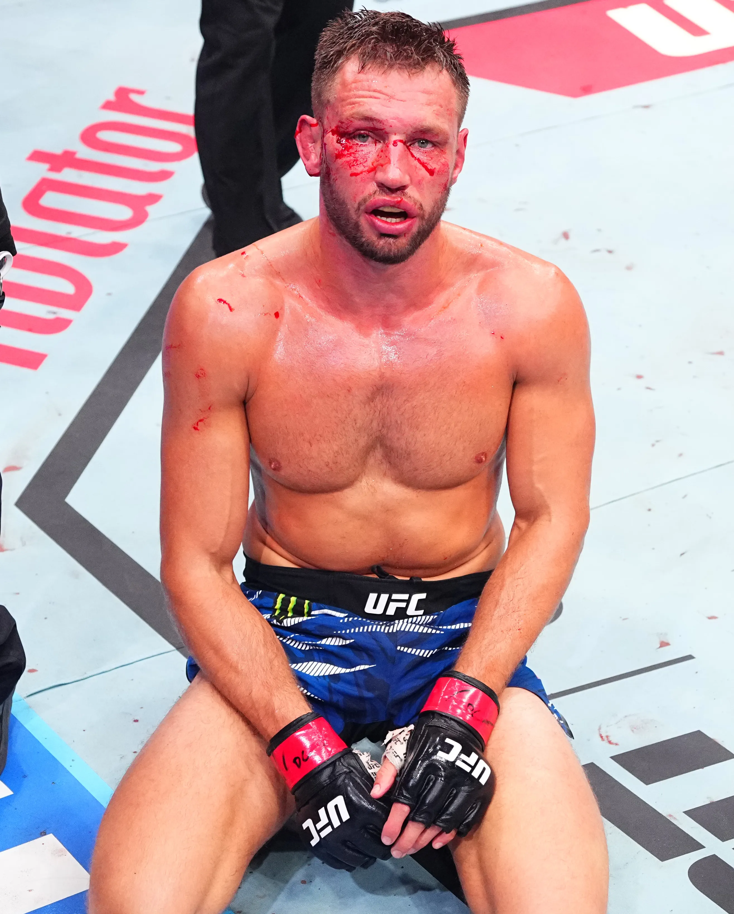

UFC Fight Night de Ridder vs. Allen Recap
Saturday 10.18.2025 at 04:00 PM ET • Rogers Arena

Table of Contents
- Summary
- Main Card
- Prelims
Summary
On Saturday, October 18, 2025, the UFC returned to Vancouver with a middleweight showdown between Brendan Allen and Reinier de Ridder headlining the event. Originally slated as a title eliminator between de Ridder and Anthony Hernandez, the main event was completely reshaped when Allen stepped in on short notice. The result was a statement-making performance that shook up the middleweight division.
In the main event, Brendan Allen proved why he's one of the division's most underrated fighters. Taking the fight on just 3.5 weeks' notice against the surging de Ridder, Allen dominated with devastating ground and pound, ultimately forcing de Ridder's corner to stop the fight after the fourth round. With this win, Allen positioned himself for a potential fight against the division's top contenders.
The co-main event saw Mike "Proper" Malott extend his win streak to three with a unanimous decision over Kevin Holland, though the fight was marred by controversy due to multiple groin shots that clearly affected Holland's performance. Meanwhile, Canadian favorite Aiemann Zahabi extended his win streak to seven with a split decision victory over Marlon Vera in front of a raucous home crowd.
Other notable performances included Manon Fiorot's first-round destruction of Jasmine Jasudavicius, announcing her return to title contention after a loss to Valentina Shevchenko earlier in the year. Charles Jourdain looked sharp at bantamweight, submitting Davey Grant with a first-round guillotine choke. The prelims also featured controversy, with referee Dan Miragliotta making a highly questionable decision in the Nelson vs. Frevola fight.
Overall, the card delivered solid action from top to bottom, earning a 7.1/10 rating. I debated between a 6.9 and a 7.1, but the competitive undercard, entertaining finishes, and significant implications of the main event pushed it to a 7.1. While it lacked the star power of a pay-per-view and the top two fights weren't peak entertainment, the Canadian crowd brought incredible energy—especially for Zahabi's victory—making this a memorable Fight Night.
Main Card
Brendan Allen vs. Reinier de Ridder
Result: KO/TKO, Retirement at 5:00 Round 4 of 5, 20:00 Total
Reinier de Ridder entered the UFC in November 2024 at UFC Fight Night: Magny vs. Prates and immediately went on a tear, entering his fifth fight in a 12-month period at UFC Vancouver. All four previous fights resulted in wins, with his biggest victory coming against Robert Whittaker at UFC Abu Dhabi in July. Brendan Allen came into this fight on short notice to replace Anthony "Fluffy" Hernandez, who had pulled out. Allen had mixed success lately but was coming off a dominant unanimous decision win over Marvin Vettori at UFC 319 in July.
The original fight between Hernandez and de Ridder was set to be a title eliminator, with the winner positioned to face the victor of Imavov vs. Borralho for a shot at Chimaev. Even with Hernandez pulling out, de Ridder showed his willingness to take risks by accepting a dangerous fight against Brendan Allen, though the title implications became less clear.
The fight started with de Ridder using a judo throw to get Allen to the ground early in the first. He threatened an arm triangle to no avail, and after taking Allen's back, Allen resorted to wrist control to prevent a choke. Allen spent the rest of the first round playing defense, surviving de Ridder's attempts to finish.
Allen bounced back well in Round 2 with devastating ground and pound from the mount, delivering brutal elbows to de Ridder's face. In the third, de Ridder returned to his bread and butter, getting an immediate body lock that led to a takedown and back take. Allen then reversed the position and brought the fight back to his world, returning to his devastating ground and pound. For the next three minutes, Allen delivered relentless punishment. de Ridder attempted a reverse triangle in the final 20 seconds, but it wasn't enough. Allen took the third round to go up 2-1, and de Ridder wobbled back to his stool completely gassed.
Allen landed a statement-making body slam to start the fourth and continued to smother de Ridder with ground and pound from mount, clearly taking the round. Going into the fifth, de Ridder needed a finish to keep his title aspirations alive, but he was spent. Referee Jason Herzon checked in with de Ridder and his corner between rounds, and the corner threw in the towel, declaring a TKO win for Brendan Allen. Just like that, all title fight aspirations were gone.
There are multiple takeaways from this fight. Most importantly, Nassourdine Imavov is now undeniable for the next title shot. The UFC Vancouver main event was not exciting enough to overshadow Imavov's five-fight win streak over top middleweight competition. Overall, the de Ridder vs. Allen fight had interesting scrambles but was rather lackluster, with no "holy shit" moments. It also raises the question: are the top contenders in the middleweight division overrated? A contingent of fighters—Strickland, DDP, Adesanya, Whittaker, Costa—primarily fight amongst themselves, rarely giving opportunities to up-and-comers like Allen, Hernandez, Imavov, and Borralho. With these fights not being made, it's unclear if the current rankings are accurate.
For de Ridder, it's time to take a break—at least four months. He should go home, rest, recover, and spend time with his family. If schedules align, the UFC should run back the Hernandez fight. In his post-fight interview, Brendan Allen called out Chimaev, DDP, and Strickland. The DDP fight seems the most likely and intriguing matchup for Allen next. There's existing bad blood, and a win would bring him a step closer to the title. This is undoubtedly the biggest win of Brendan Allen's career. To all UFC fighters out there: stay in shape. Risk is rewarding, but you can only take that risk if you're always ready to 'rock and roll'.
Mike Malott vs. Kevin Holland
Result: Decision, Unanimous at 3 Rounds, 15:00 Total
The journeyman Kevin "Big Mouth" Holland, a persistent "fan favorite," looked to secure his third win of the year. I'm starting to get fed up with Holland; I don't understand what he or the UFC is trying to accomplish. He isn't particularly good or funny, and while his fights are somewhat entertaining, his card placement doesn't match his value. On the other hand, after a setback loss to Neil Magny at UFC 297, Mike Malott looked to build a three-fight win streak and start facing higher-ranked opponents.
The fight was derailed early by a controversial groin shot from Malott, leading to a five-minute stoppage in the first round with no point deduction. Even after the break, Holland was visibly hurt, holding his groin for the remainder of the round. This was the second groin shot Holland suffered in about 90 seconds. Optically, it looked terrible, but with a fighter like Holland—who seems to be there for a paycheck rather than the result—it's hard to gauge his true state. If he could get a DQ win over Malott, that would probably suit him just fine. However, Holland should not have continued; no one wants to watch a grown man run around the octagon holding his sack for 12 minutes. Between rounds, Holland spent the time complaining about his groin. After the five-minute break, I was ready to move on.
A doctor was brought in to "evaluate" Holland after the first round, but not during the official timeout—a weird procedural choice. What could the doctor do without a full inspection? All he did was ask Holland, "Can you continue?" to which Holland responded by pacing around, neither confirming nor denying his ability to fight. It felt like Holland didn't want to continue but didn't want to be the one to quit. I'll tell it like I see it: Kevin Holland is a joke. He's always trying to control the narrative so he can remain highly placed on cards and receive unwarranted payouts. By being opaque about his condition, if the doctor calls the fight, Holland can claim he was good to go. I hope he retires soon or the UFC cuts him. He's a "fan favorite" the UFC can slot onto cards to claim they're stacked without doing actual matchmaking. Furthermore, Holland fights so frequently that he can't train enough to improve his weaknesses, and he doesn't fight to win. So when you watch him, ask yourself: "If he doesn't even care, why should I?"
The rest of the fight was weird. In the second round, Malott was clearly timid, either wary of another foul or showing Holland too much respect. Holland just moon-walked around the octagon with his hand in his pants.
In the third, Holland came back with some big shots, slightly busting Malott's nose. It was a fairly close round until Malott employed some slick grappling in the final 90 seconds. In the end, Malott took the unanimous decision, winning the last two rounds.
As a result, Malott is now on a three-fight win streak, while Holland has lost his last two. It's unfortunate, as the groin shots undoubtedly impacted the fight's outcome. Malott will now enter the rankings. Welterweight is stacked, and I don't see him going far against the division's elite, but I'd like to see him fight someone like Geoff Neal. If he can get past him, then we can start talking about more serious matchups.
Aiemann Zahabi vs. Marlon Vera
Result: Decision, Split at 3 Rounds, 15:00 Total
After getting schooled by O'Malley in the promotion's most undeserved title shot ever at UFC 299 and losing to Deiveson Figueiredo at UFC Fight Night: Sandhagen vs. Nurmagomedov, Marlon "Chito" Vera looked to get back on track after over a year out of the cage. Zahabi, riding a six-fight win streak and coming off a big win over Jose Aldo at UFC 315, looked to secure his seventh consecutive win and become a legitimate title contender at bantamweight.
Overall, Zahabi moved much better than Chito, circling and feinting effectively. Chito relied on his typical tactics, moving forward and backward, hoping his chin would hold up. The first round was even, with Zahabi being the more active fighter, while Chito inflicted more damage, giving Zahabi a bloody nose.
Vera scored a big knockdown in the second with a jab, but Zahabi recovered—arguably grabbing the fence to stay in the fight. Vera continued to follow up with big combinations, including a memorable body shot. Zahabi finished the round pouring on pressure to gain some respect, but it wasn't enough to win back the round.
Both fighters scrapped hard in the third. Zahabi hit Vera with a big left that caused a serious reaction. Then, with a minute left, Zahabi blitzed forward, showing incredible heart in front of the Canadian home crowd. The final 10 seconds were an absolute "barn burner," with both men throwing everything they had.
The fight ended in a split decision win for Aiemann Zahabi, extending his win streak to seven, while Vera drops to 0-3 in his last three. I personally thought Vera won, taking the first two rounds. I lean towards Vera in the first because he broke Zahabi's nose. I believe Vera wins that fight anywhere besides Canada. I don't think the judges were implicitly biased, but in a crowded arena cheering vigorously for one fighter, the fan favorite's attacks seem more impactful.
Chito must now consider his future in the promotion. If he stays with the UFC, he'll need to fight far down the rankings. Zahabi called out 'Suga' Sean O'Malley, but that seems unlikely with rumors of O'Malley targeting Song Yadong. Regardless, I think O'Malley would spark Zahabi. A callout of Deiveson Figueiredo would have been better. Realistically, the UFC will probably give Zahabi to Cory Sandhagen, as there are no fresh matchups for Sandhagen in the top 15. Once that fight happens, the Zahabi hype train will likely be derailed.
Manon Fiorot vs. Jasmine Jasudavicius
Result: KO/TKO, Punches and Knees at 1:14 Round 1 of 3
Coming into UFC Vancouver, Fiorot was fresh off a title fight unanimous decision loss to Valentina Shevchenko at UFC 315 and was looking to get back on track. After losing to Tracy Cortez at UFC Fight Night: Grasso vs. Shevchenko 2 by unanimous decision, Jasudavicius was on a five-fight win streak, on the brink of a title shot. Her notable wins included Jéssica Andrade at UFC 315—a former champion—and Mayra Bueno Silva at UFC Fight Night: Adesanya vs. Imavov, a former title challenger.
Boos echoed throughout the stadium as Dan Miragliotta re-entered the cage to referee after his blunder in the Nelson vs. Frevola fight earlier on the card. It was a quick night at the office for Fiorot, who clipped Jasudavicius early and finished her with ground and pound for a TKO win. With this victory, Fiorot solidifies herself as a contender in the flyweight division.
With Fiorot's win, I believe Natalia Silva solidifies herself as the next flyweight title contender after the title fight at MSG next month. If Shevchenko retains, Fiorot likely needs one more win before another title shot. She should wait to see who fights for the title next and how the bout between Erin Blanchfield and Tracy Cortez plays out at UFC 323.
Jasudavicius can come back soon if she wants, but she'll probably need to take a step back in the rankings. A fight against Miranda Maverick makes sense next.
Charles Jourdain vs. Davey Grant
Result: Submission, Guillotine Choke at 3:05 Round 1 of 3
NASTY FIRST ROUND FINISH FROM CHARLES JOURDAIN!
— THE MMA GURU (@THATBOYMMAGURU) October 19, 2025
Big flying knee near KO win and then latches up the guillotine as predicted. #UFCVancouver
Didn't let his bro steal the thunder, huge win from Charles, a new big name in this division.
Jourdain vs Rosa's Jr next?
Leading into this fight, Davey Grant moved from England to Abu Dhabi and ultimately landed in Vegas, settling at Syndicate MMA to work with John Wood. After moving both his family and weight class, Grant looked to make a statement win and prove he's here for the long run in the UFC bantamweight division. Unfortunately, he did not live up to these expectations.
The fight started with a nasty flying knee from Jourdain, followed by some brutal ground and pound. Grant somehow managed to avoid being knocked out, but that was all he could do. Immediately after Grant recovered, Jourdain snuck in a tight guillotine and got the tap. An absolutely electrifying performance from Jourdain!
Jourdain is looking good at bantamweight, now 2-0 in his first two bouts. Marcus McGhee is a good callout, but it would be a big jump up the rankings. If he doesn't get McGhee, a fight against Bryce Mitchell would be a good matchup before challenging the top 15.
Kyle Nelson vs. Matt Frevola
Result: Decision, Unanimous at 3 Rounds, 15:00 Total
Before UFC Vancouver, Frevola was on a two-fight losing streak, suffering brutal KOs from both BSD and Fares Ziam. He took a year off after each loss. Coming into this fight, he looked to bounce back and find a second wind in his UFC career.
The fight was fairly even on the feet in the first round, with Frevola securing a takedown. Towards the end of the round, Nelson knocked Frevola down with a clean right. Nelson pounced and finished Frevola with ground and pound with three seconds left.
After the apparent TKO, referee Dan Miragliotta claimed the fight wasn't over and that he had merely stopped the action to indicate the end of the round. This was one of the most heinous refereeing decisions I've ever seen. Miragliotta may have legitimately thought the round was over, but he stopped the fight with time left on the clock! Furthermore, Frevola was out of it, and Nelson was raining down unanswered punishment. Unacceptable. This incident was ironic, given a similar controversy at UFC Perth in September with the Neil Magny vs. Jake Matthews bout. Fortunately for Nelson, he was luckier than Matthews and proceeded to win the fight.
Coming out of the first round, Frevola was seriously gassed, and Nelson capitalized. Nelson ultimately pulled out the unanimous decision in front of his home crowd, while Frevola falls to 0-3 in his last three outings.
I don't know what lies ahead for Frevola in the UFC. Nelson made his lightweight debut and looked alright. I think Chase Hooper could be a good next fight for him.
Prelims
Drew Dober vs. Kyle Prepolec
Result: KO/TKO, Punches, Knees, and Elbows at 1:16 Round 3 of 3, 11:16 Total
Before this fight, Drew Dober was on a three-fight losing streak with his spot in the UFC on the line. Beyond being good-looking, I'm not sure what Dober excels at. Early on, Dober was able to 'fight his fight,' leading the dance and putting pressure on Prepolec.
Dober split his left shin open after throwing numerous low calf kicks. Despite getting beat up, Dober seemed to be hitting Prepolec with higher volume. Prepolec started finding success in the second, really laying into Dober and forcing him to attempt to grapple.
Going into the third, it was anyone's fight, with each fighter likely taking one round. Midway through the third, Dober delivered a nasty low blow to Prepolec, causing the Canadian to fall in excruciating pain. The commission urged referee John Cooper to take a point from Dober, but Cooper was hesitant. He ultimately took a point in a very peculiar way, seemingly only doing so because Prepolec was taking a long time to recover. As a ref, you either take a point or you don't. You can't delay the decision, get swayed by the commission, and then act minutes after the foul.
After the point deduction, the pressure was on Dober: it was knockout or lose. Fortunately, he got a second wind, let his inner berserker go, and successfully finished the fight to save his career.
Unfortunately for Prepolec, if not for the low blow, I think Dober loses this fight more often than not.
Aoriqileng vs. Cody Gibson
Result: KO/TKO, Straight Right to Hammerfists at 0:21 Round 1 of 3
The commentary previewing this fight was extremely biased towards Gibson. DC and Megan Olivi complimented him, discussing how he entered this fight with a well-structured camp, having dialed back his teaching. He even used a "Google Doc" to track his heart rate, wore a chest strap monitor, an Oura ring...the works. But as they say, "heart rate don't matter if you don't make it out of the first round...let alone the first minute." Gibson went out and got absolutely starched by Aoriqileng with a brutal right hand to the chin. The Mongolian followed up with ground and pound, and Gibson was toast. There's a clear lesson for Gibson here: if you walk into punches, who cares about your zone 2 cardio?
At 38, Gibson should consider retirement. The two-time UFC vet is 2-4 in his second stint with the promotion and is now far from the rankings. If everything went perfectly, he'd be fighting for a title at 40, which seems highly unlikely. Gibson needs to accept that his best days are behind him and look for the next challenge in his life. With this nasty KO win, Aoriqileng gets back on track after a setback loss to Raul Rosas Jr. at UFC 306, though it's unclear what's next for him.
Bruno Silva vs. Hyun Sung Park
Result: Submission, Rear Naked Choke at 2:15 Round 3 of 3, 12:15 Total
In the first round, Silva cut Park with a hammerfist elbow and broke his jaw with a clean right. Park struggled to get going, finding success neither on the feet nor on the ground.
Park came out swinging in the third, hitting Silva with brutal body shots to the liver. But Silva quickly turned the tide, sinking in a rear-naked choke and forcing a quick tap. Silva defended his top-15 spot and snapped a two-fight losing streak.
Now on a two-fight skid, things are looking dicey for Park. If Kai Asakura doesn't move up to bantamweight, book that fight—a battle of East Asian prospects!
Djorden Santos vs. Danny Barlow
Result: Decision, Unanimous at 3 Rounds, 15:00 Total
WANT A ROUND!?!?! Barlow piecing up Santos with the left and Santos is out on the feet. Somehow stays alive and is able to clip Barlow bad late, and nearly finishes him…I had that one 10-9 Barlow…all tied up going into the third #UFCVancouver
— Patroklos Stefanou (@formyxscarfalo1) October 18, 2025
Danny "Left Hand of God" Barlow and Djorden Santos squared off in a high-profile prelim matchup. Both had seen early success in their UFC careers and were looking to bounce back from recent losses.
Early in the fight, both fighters were very cautious, fighting at range and unwilling to make big advances.
In the second round, Barlow started piecing up Santos with his signature left hand to the body and chin. He laid down heavy shots and nearly finished Santos, who managed to recover with a flurry of his own. The fight was tied going into the third.
As the fight moved into the third, Barlow was clearly fatiguing. His hands were dropping, and he couldn't maintain the same volume from the second round. Barlow then made a terrible decision by pulling guard, and Santos capitalized, dishing out effective ground and pound.
Santos ultimately won the decision and got back on track in the middleweight division. On the other hand, it's clear that Barlow is a one-dimensional fighter, relying almost solely on his left hand. He's a "one-trick pony" in dire need of augmenting his game. Furthermore, Barlow lacks precision, constantly loading up and swinging without a clear game plan. Now on a two-fight losing streak in a "must-win" predicament, Barlow needs to get back in the gym and work on both his skills and strategy.
Stephanie Luciano vs. Ravena Oliveira
Result: Submission, Rear Naked Choke at 2:50 Round 3 of 3, 12:50 Total
Unfortunately, I didn't pay much attention to this fight. Luciano dominated and scored a rear-naked choke in the third round. Not much else to say.
Yousri Belgaroui vs. Azamat Bekoev
Result: KO/TKO, Punches at 0:55 Round 3 of 3, 10:55 Total
Coming into UFC Vancouver, Bekoev had two nasty first-round KOs on his resume to start his UFC career, over Zach Reese and Ryan Loder. With significant hype and the Russian fanbase behind him, Bekoev entered as a massive -295 betting favorite. Unfortunately, this hype was short-lived, as the fight turned into target practice for Belgaroui. Belgaroui fought like the taller fighter, keeping his range, throwing knees up the middle, and preventing Bekoev from taking the fight to the ground.
Before his UFC debut, Belgaroui struggled on the Contender Series in 2023, losing to Tulio by unanimous decision. After the setback, he rattled off two wins in Levels Fight League and returned to the Contender Series in 2024 with a vengeance, scoring a first-round KO over Taiga Iwasaki. Belgaroui is now on a four-fight win streak in MMA.
Belgaroui has fought both Adesanya and Pereira in kickboxing and holds a win over Pereira. At 33 years old, it's time for him to make some moves in the middleweight division.
Melissa Croden vs. Tainara Lisboa
Result: KO/TKO, Punches From Top Position at 4:32 Round 3 of 3, 14:32 Total
Croden was the bigger and longer fighter. She won the exchanges on the feet with a stiff jab and big hooks. The second round was extremely dominant from Croden, with intense ground and pound that Lisboa had no answer for. DC kept saying, "You gotta watch out for the armbar," whenever Croden was smothering Lisboa, but the only reason an armbar was even a remote threat was because Lisboa's legs were in bizarre positions due to being dominated.
The third round was more of the same, as Croden scored a nasty TKO win in her UFC debut.